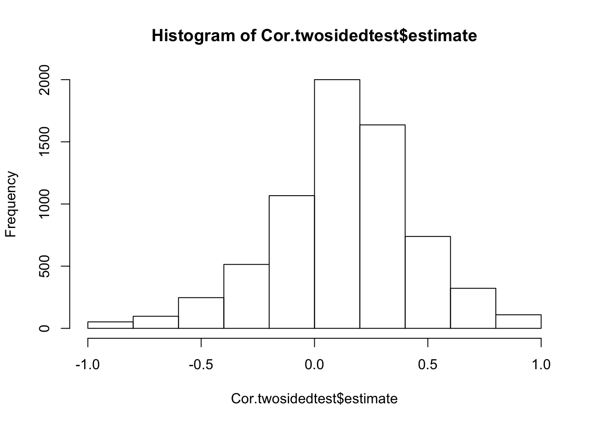
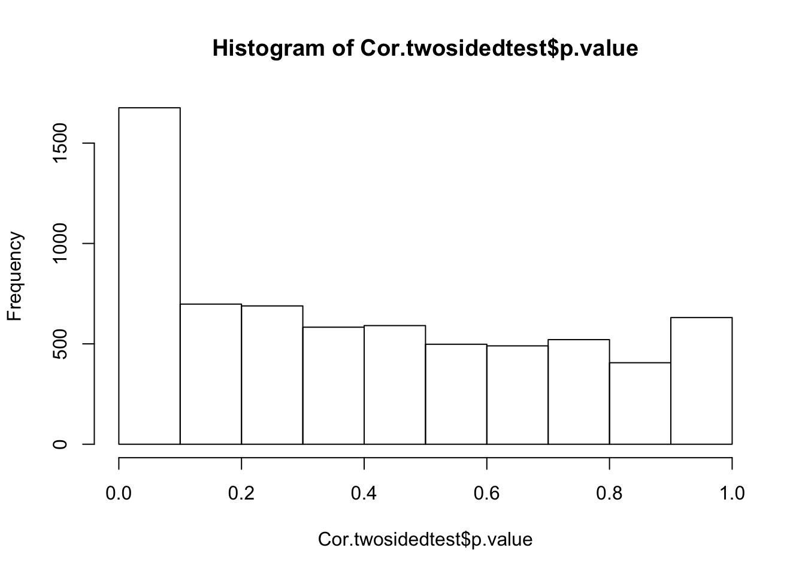
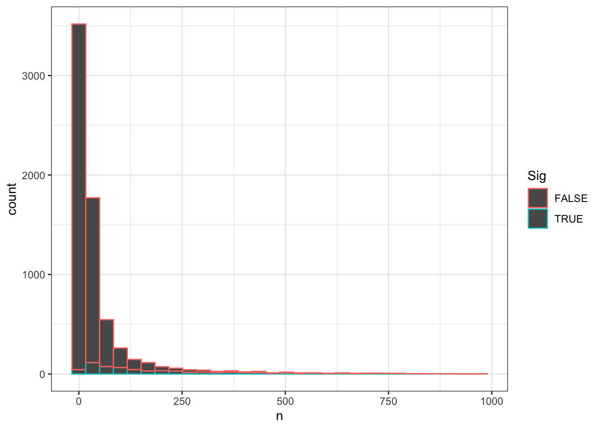
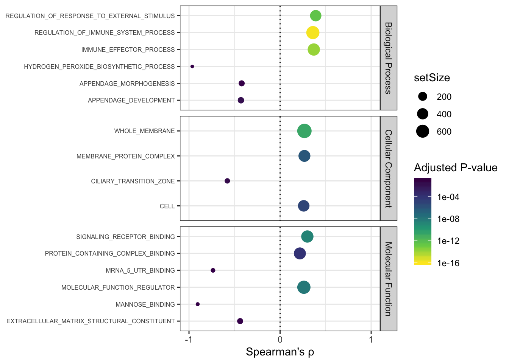
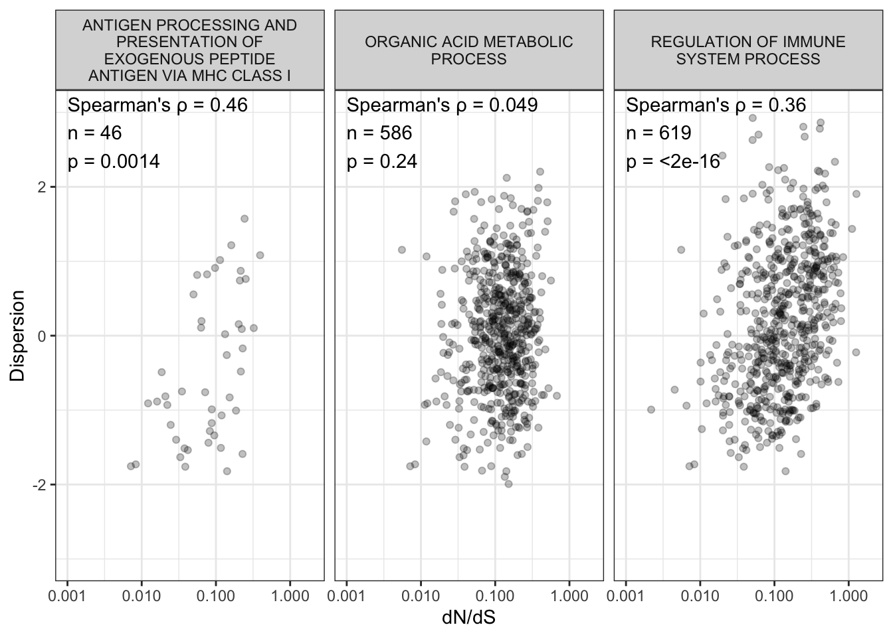

Last updated: 2020-09-23
Checks: 6 1
Knit directory: Comparative_eQTL/analysis/
This reproducible R Markdown analysis was created with workflowr (version 1.5.0). The Checks tab describes the reproducibility checks that were applied when the results were created. The Past versions tab lists the development history.
The R Markdown is untracked by Git. To know which version of the R Markdown file created these results, you’ll want to first commit it to the Git repo. If you’re still working on the analysis, you can ignore this warning. When you’re finished, you can run wflow_publish to commit the R Markdown file and build the HTML.
Great job! The global environment was empty. Objects defined in the global environment can affect the analysis in your R Markdown file in unknown ways. For reproduciblity it’s best to always run the code in an empty environment.
The command set.seed(20190319) was run prior to running the code in the R Markdown file. Setting a seed ensures that any results that rely on randomness, e.g. subsampling or permutations, are reproducible.
Great job! Recording the operating system, R version, and package versions is critical for reproducibility.
Nice! There were no cached chunks for this analysis, so you can be confident that you successfully produced the results during this run.
Great job! Using relative paths to the files within your workflowr project makes it easier to run your code on other machines.
Great! You are using Git for version control. Tracking code development and connecting the code version to the results is critical for reproducibility. The version displayed above was the version of the Git repository at the time these results were generated.
Note that you need to be careful to ensure that all relevant files for the analysis have been committed to Git prior to generating the results (you can use wflow_publish or wflow_git_commit). workflowr only checks the R Markdown file, but you know if there are other scripts or data files that it depends on. Below is the status of the Git repository when the results were generated:
Ignored files:
Ignored: .DS_Store
Ignored: .RData
Ignored: .Rhistory
Ignored: .Rproj.user/
Ignored: WorkingManuscript.zip
Ignored: WorkingManuscript/
Ignored: analysis/.DS_Store
Ignored: analysis/.Rhistory
Ignored: analysis_temp/.DS_Store
Ignored: big_data/
Ignored: code/.DS_Store
Ignored: code/snakemake_workflow/.DS_Store
Ignored: code/snakemake_workflow/.Rhistory
Ignored: data/.DS_Store
Ignored: data/PastAnalysesDataToKeep/.DS_Store
Ignored: figures/
Ignored: output/.DS_Store
Untracked files:
Untracked: analysis/20200907_Response_Point_02.Rmd
Untracked: analysis/20200907_Response_Point_04.Rmd
Untracked: data/c5.all.v7.1.symbols.gmt
Untracked: data/c5.all.v7.1.symbols.gmt.categories.tsv.gz
Untracked: data/h.all.v7.1.symbols.gmt
Unstaged changes:
Modified: analysis/20200907_Response_OriginalComments.Rmd
Modified: analysis/20200907_Response_Point_06.Rmd
Modified: analysis/20200907_Response_Point_09-2.Rmd
Modified: analysis/20200907_Response_Point_09.Rmd
Modified: analysis/20200907_Response_Point_11.Rmd
Modified: analysis/Final_2_DispersionPlots.Rmd
Modified: analysis_temp/TabulaMuris_analysis2.Rmd
Note that any generated files, e.g. HTML, png, CSS, etc., are not included in this status report because it is ok for generated content to have uncommitted changes.
There are no past versions. Publish this analysis with wflow_publish() to start tracking its development.
Original reviewer point:
The second test is to correlate the higher coding sequence conservation with lower dispersion. Again, the positive result is not unexpected. There are many indirect and/or confounding factors that may explain the effect. This reviewer, however, understands it is impossible to control them all (also authors have attempted to address some of them in the next few tests). However, here it is better to add exploratory analyses for genes in different functional groups and also give examples of outlier genes that do not follow the rule.
This proposed analysis was difficult for me to come up with a way to enact. One idea is to pick each a set of gene annotation groups (which are often overlapping, complicating the matter), and then perform the dn/ds vs dispersion correlation test for each gene group. The most appropriate gene set annotations I found to use for this purpose is the MSigDB Hallmark gene collection, which contains 50 gene sets, each with mostly non-overlapping sets of genes no greater than 200 per set.
Another approach, which I will also enact below, is to perform a standard GSEA analysis using the residual of the genome-wide dn/ds vs dispersion trend. In other words, what gene sets have higher dispersion than you would expect given its dn/ds.
First, load necessary libraries… and read in data
library(tidyverse)
library(knitr)
library(stats)
library("clusterProfiler")
library("org.Hs.eg.db")
library(broom)
library(qvalue)
library(data.table)
library(Cairo)
library(MASS)
#read in table of overdispersion, dispersion, mean expresion estimates
Dispersion <- read.delim('../output/OverdispersionEstimatesFromChimp.txt')
Dispersion$MeanDispersion <- (Dispersion$Chimp.Residual + Dispersion$Human.Residual)/2
#Read in table of dn/ds estimates
PanMammal.dnds <- read.delim("../data/Overall_dN_dS.bed", col.names = c("chrom", 'start', "stop", "gene", "score", "strand", "blockstart", "blockstop", "color", "ensemblprotein", "dn.ds"))
#Gene name symbols
Symbols <- read.delim("../data/HumanGeneIdToHGNC_Symbol.Biomart.txt.gz", stringsAsFactors = F) %>% dplyr::select(ensembl_gene_id=Gene.stable.ID, hgnc_symbol=HGNC.symbol)
MergedTable <- left_join(Dispersion, Symbols, by=c("gene"="ensembl_gene_id")) %>%
left_join(PanMammal.dnds, by=c("hgnc_symbol"="gene")) %>%
dplyr::select(gene, Chimp.Residual, Human.Residual, MeanDispersion, dn.ds) %>%
drop_na() %>%
filter(dn.ds>0) #drop things that will cause error when taking log.
head(MergedTable) %>% kable()| gene | Chimp.Residual | Human.Residual | MeanDispersion | dn.ds |
|---|---|---|---|---|
| ENSG00000186891 | 2.3121799 | 0.0805422 | 1.1963611 | 0.472922 |
| ENSG00000186827 | 1.6405781 | 1.9529450 | 1.7967615 | 0.279429 |
| ENSG00000078808 | -0.5386575 | -0.8183559 | -0.6785067 | 0.076499 |
| ENSG00000176022 | -0.2006514 | -0.6565939 | -0.4286227 | 0.048958 |
| ENSG00000160087 | -0.4256215 | -0.7154168 | -0.5705192 | 0.107057 |
| ENSG00000169972 | -0.4701338 | 0.4063494 | -0.0318922 | 0.157678 |
GmtFile <- "/Users/benfair/Downloads/c5.all.v7.1.symbols.gmt"
NumFields <- max(count.fields(GmtFile, sep = '\t'))
HallmarkGeneSets <- read.table(GmtFile, header = FALSE, sep = "\t",
col.names = c("GeneSetName", "link", paste0("V",seq_len(NumFields-2))), fill = TRUE, stringsAsFactors = F, na.strings = "") %>%
dplyr::select(-link) %>%
gather(key="NumGeneInSet", value="gene", -GeneSetName) %>%
drop_na() %>%
arrange(GeneSetName, NumGeneInSet) %>%
dplyr::select(-NumGeneInSet) %>%
inner_join(Symbols, by=c("gene"="hgnc_symbol"))
head(HallmarkGeneSets) %>% kable()| GeneSetName | gene | ensembl_gene_id |
|---|---|---|
| GO_1_4_ALPHA_OLIGOGLUCAN_PHOSPHORYLASE_ACTIVITY | TYMP | ENSG00000025708 |
| GO_1_4_ALPHA_OLIGOGLUCAN_PHOSPHORYLASE_ACTIVITY | GDPGP1 | ENSG00000183208 |
| GO_1_4_ALPHA_OLIGOGLUCAN_PHOSPHORYLASE_ACTIVITY | MTAP | ENSG00000099810 |
| GO_1_4_ALPHA_OLIGOGLUCAN_PHOSPHORYLASE_ACTIVITY | PYGB | ENSG00000100994 |
| GO_1_4_ALPHA_OLIGOGLUCAN_PHOSPHORYLASE_ACTIVITY | PYGL | ENSG00000100504 |
| GO_1_4_ALPHA_OLIGOGLUCAN_PHOSPHORYLASE_ACTIVITY | PYGM | ENSG00000068976 |
Now I will get the dn/ds vs dispersion correlation coefficient and p value for each gene set.
Cor.twosidedtest <- HallmarkGeneSets %>%
left_join(MergedTable, by=c("ensembl_gene_id"="gene")) %>%
drop_na() %>%
add_count(GeneSetName) %>%
filter(n>=5) %>%
group_by(GeneSetName) %>%
do(tidy(cor.test(.$dn.ds, .$MeanDispersion, method = "spearman", exact = T))) %>%
filter(p.value>0) #filter out buggy cases because of ties in spearman cor test
Cor.twosidedtest %>% head() %>% kable()| GeneSetName | estimate | statistic | p.value | method | alternative |
|---|---|---|---|---|---|
| GO_1_4_ALPHA_OLIGOGLUCAN_PHOSPHORYLASE_ACTIVITY | 0.1000000 | 18 | 0.9500000 | Spearman’s rank correlation rho | two.sided |
| GO_1_PHOSPHATIDYLINOSITOL_3_KINASE_ACTIVITY | -0.1000000 | 22 | 0.9500000 | Spearman’s rank correlation rho | two.sided |
| GO_1_PHOSPHATIDYLINOSITOL_3_KINASE_REGULATOR_ACTIVITY | 0.0329670 | 440 | 0.9155316 | Spearman’s rank correlation rho | two.sided |
| GO_1_PHOSPHATIDYLINOSITOL_BINDING | 0.2142857 | 44 | 0.6615079 | Spearman’s rank correlation rho | two.sided |
| GO_14_3_3_PROTEIN_BINDING | -0.0979021 | 314 | 0.7662885 | Spearman’s rank correlation rho | two.sided |
| GO_2_IRON_2_SULFUR_CLUSTER_BINDING | -0.3901099 | 506 | 0.1887717 | Spearman’s rank correlation rho | two.sided |
hist(Cor.twosidedtest$estimate)
hist(Cor.twosidedtest$p.value)
Given how a lot of these tests are not independent (due to overlapping gene sets), I wasn’t sure what to expect in terms of well calibrated P-values. This histogram is a bit comforting. Let’s identify genes at some FDR threshold with Storey’s q-value method, and see what the strongest gene categories that drive this correlation are.
Cor.twosidedtest$q <- qvalue(Cor.twosidedtest$p.value)$qvalues
#How many sets FDR<0.1
(Cor.twosidedtest$q < 0.1 ) %>% table().
FALSE TRUE
6169 614 #Are these significant sets basically just the really big sets with lots of power?
Cor.twosidedtest <- Cor.twosidedtest %>%
mutate(Sig=q<0.1) %>%
left_join(
HallmarkGeneSets %>% left_join(MergedTable, by=c("ensembl_gene_id"="gene")) %>%
drop_na() %>%
count(GeneSetName) %>%
filter(n>=5),
by="GeneSetName"
)
ggplot(Cor.twosidedtest, aes(x=n, color=Sig)) +
geom_histogram() +
theme_bw()
Ok that looks good. Let’s make a plot in a similar format to my other GO analyses, separated by BP, MF, or CC. To do this I need to read in different files to map which GO terms belong to which of those categories.
GO.categories <- read.table("../data/c5.all.v7.1.symbols.gmt.categories.tsv.gz", col.names = c("GeneSetName", "Category"), sep='\t') %>%
mutate(Category=gsub("/Users/benfair/Downloads/c5.(.+?).v7.1.symbols.gmt",replacement = "\\1",Category
))
GO.Summary.plot <- Cor.twosidedtest %>%
left_join(GO.categories, by="GeneSetName") %>%
dplyr::select(GeneSetName, SpearmansRho=estimate, p.value, p.adjust=q, setSize=n, ONTOLOGY=Category) %>%
mutate(Polarization=sign(SpearmansRho)) %>%
filter(!Polarization==0) %>%
# filter(str_detect(Description, 'DNA')) %>%
# group_by(ONTOLOGY, Polarization) %>%
group_by(ONTOLOGY, Polarization) %>%
arrange(p.adjust) %>%
mutate(rowN=row_number()) %>%
# top_n(n = 3, wt = -log(p.adjust)) %>%
ungroup() %>%
filter(rowN<=3) %>%
filter(p.adjust<0.1) %>%
mutate(GeneSetName=str_remove(GeneSetName, "^GO_")) %>%
mutate(ONTOLOGY=recode(ONTOLOGY, `bp` = "Biological Process", `cc` = "Cellular Component", `mf`="Molecular Function")) %>%
ggplot(aes(x=SpearmansRho, y=GeneSetName, color=p.adjust, size=setSize)) +
geom_point() +
scale_x_continuous(limits=c(-1,1), breaks=c(-1,0,1)) +
facet_grid(ONTOLOGY~., scales = "free") +
scale_colour_viridis_c(trans="log10", direction=-1, option="D", limits=c(1E-16, 0.1)) +
# scale_colour_gradient(low="red", high="black") +
facet_grid(ONTOLOGY~., scales = "free") +
# xlab("Enrichment\nOverdispersedInHuman<-->OverdispersedInChimp") +
xlab("Spearman's \u03C1") +
scale_y_discrete(labels = function(x) lapply(strwrap(x, width = 35, simplify = FALSE), paste, collapse="\n")) +
labs(color = "Adjusted P-value") +
geom_vline(xintercept = 0, linetype="dotted") +
theme_bw() +
theme(axis.text.y = element_text(size=6)) +
ylab(NULL)
GO.Summary.plot
I am skeptical of the negative associations. Consistent with the story I have been building, the strongest associations between dn.ds and dispersion are in immune related genes.
Let’s plot that correlation as a scatter plot, along with some randomly chosen category of similar size for comparison
#Find gene categories similar in size as comparison
Cor.twosidedtest %>%
filter(GeneSetName=="GO_REGULATION_OF_IMMUNE_SYSTEM_PROCESS") %>% kable()| GeneSetName | estimate | statistic | p.value | method | alternative | q | Sig | n |
|---|---|---|---|---|---|---|---|---|
| GO_REGULATION_OF_IMMUNE_SYSTEM_PROCESS | 0.3600718 | 25295938 | 0 | Spearman’s rank correlation rho | two.sided | 0 | TRUE | 619 |
Cor.twosidedtest %>%
filter(n>579 & n< 649) %>% kable()| GeneSetName | estimate | statistic | p.value | method | alternative | q | Sig | n |
|---|---|---|---|---|---|---|---|---|
| GO_ADENYL_NUCLEOTIDE_BINDING | 0.0722987 | 42070813 | 0.0658743 | Spearman’s rank correlation rho | two.sided | 0.3054643 | FALSE | 648 |
| GO_CELL_ACTIVATION | 0.2846160 | 24115765 | 0.0000000 | Spearman’s rank correlation rho | two.sided | 0.0000000 | TRUE | 587 |
| GO_CELL_PROJECTION_ORGANIZATION | 0.0423731 | 34130874 | 0.3009068 | Spearman’s rank correlation rho | two.sided | 0.6229631 | FALSE | 598 |
| GO_CELLULAR_MACROMOLECULE_CATABOLIC_PROCESS | 0.1653719 | 34617254 | 0.0000315 | Spearman’s rank correlation rho | two.sided | 0.0012964 | TRUE | 629 |
| GO_CHROMOSOME_ORGANIZATION | 0.1225912 | 28532078 | 0.0031047 | Spearman’s rank correlation rho | two.sided | 0.0456120 | TRUE | 580 |
| GO_ENDOPLASMIC_RETICULUM | 0.1391738 | 37963676 | 0.0004100 | Spearman’s rank correlation rho | two.sided | 0.0094061 | TRUE | 642 |
| GO_INTRACELLULAR_PROTEIN_TRANSPORT | 0.1844152 | 33345693 | 0.0000034 | Spearman’s rank correlation rho | two.sided | 0.0002150 | TRUE | 626 |
| GO_LIPID_METABOLIC_PROCESS | 0.0945334 | 39932380 | 0.0165768 | Spearman’s rank correlation rho | two.sided | 0.1385821 | FALSE | 642 |
| GO_LOCOMOTION | 0.2529728 | 29960922 | 0.0000000 | Spearman’s rank correlation rho | two.sided | 0.0000000 | TRUE | 622 |
| GO_MOLECULAR_FUNCTION_REGULATOR | 0.2613738 | 30928615 | 0.0000000 | Spearman’s rank correlation rho | two.sided | 0.0000000 | TRUE | 631 |
| GO_NEGATIVE_REGULATION_OF_NUCLEOBASE_CONTAINING_COMPOUND_METABOLIC_PROCESS | 0.0541471 | 37752527 | 0.1777842 | Spearman’s rank correlation rho | two.sided | 0.5020328 | FALSE | 621 |
| GO_NEGATIVE_REGULATION_OF_SIGNALING | 0.1903382 | 30931822 | 0.0000022 | Spearman’s rank correlation rho | two.sided | 0.0001482 | TRUE | 612 |
| GO_NEUROGENESIS | 0.1063929 | 31530649 | 0.0093411 | Spearman’s rank correlation rho | two.sided | 0.0976614 | TRUE | 596 |
| GO_ORGANIC_ACID_METABOLIC_PROCESS | 0.0489076 | 31897971 | 0.2371635 | Spearman’s rank correlation rho | two.sided | 0.5709386 | FALSE | 586 |
| GO_PROTEIN_MODIFICATION_BY_SMALL_PROTEIN_CONJUGATION_OR_REMOVAL | 0.1040228 | 31773678 | 0.0110116 | Spearman’s rank correlation rho | two.sided | 0.1087103 | FALSE | 597 |
| GO_REGULATION_OF_CELL_CYCLE | 0.1377691 | 28622634 | 0.0008434 | Spearman’s rank correlation rho | two.sided | 0.0171851 | TRUE | 584 |
| GO_REGULATION_OF_CELL_POPULATION_PROLIFERATION | 0.2116038 | 32544014 | 0.0000001 | Spearman’s rank correlation rho | two.sided | 0.0000100 | TRUE | 628 |
| GO_REGULATION_OF_IMMUNE_SYSTEM_PROCESS | 0.3600718 | 25295938 | 0.0000000 | Spearman’s rank correlation rho | two.sided | 0.0000000 | TRUE | 619 |
| GO_REGULATION_OF_ORGANELLE_ORGANIZATION | 0.1327102 | 29087378 | 0.0012930 | Spearman’s rank correlation rho | two.sided | 0.0238330 | TRUE | 586 |
#Check out top hits ranked by spearman estimate
Cor.twosidedtest %>%
filter(q<0.1) %>%
filter(n>=10) %>%
arrange(desc(estimate)) %>% head(30) %>% kable()| GeneSetName | estimate | statistic | p.value | method | alternative | q | Sig | n |
|---|---|---|---|---|---|---|---|---|
| GO_LEUKOCYTE_TETHERING_OR_ROLLING | 0.8727273 | 28 | 0.0009490 | Spearman’s rank correlation rho | two.sided | 0.0189130 | TRUE | 11 |
| GO_INTEGRIN_ACTIVATION | 0.8666667 | 22 | 0.0026814 | Spearman’s rank correlation rho | two.sided | 0.0410333 | TRUE | 10 |
| GO_PHOSPHATIDIC_ACID_BINDING | 0.8666667 | 22 | 0.0026814 | Spearman’s rank correlation rho | two.sided | 0.0410333 | TRUE | 10 |
| GO_LEUKOCYTE_ADHESION_TO_VASCULAR_ENDOTHELIAL_CELL | 0.8441176 | 106 | 0.0000193 | Spearman’s rank correlation rho | two.sided | 0.0008800 | TRUE | 16 |
| GO_PROTEIN_LIPID_COMPLEX_ASSEMBLY | 0.8303030 | 28 | 0.0055568 | Spearman’s rank correlation rho | two.sided | 0.0696243 | TRUE | 10 |
| GO_POSITIVE_REGULATION_OF_STEROID_METABOLIC_PROCESS | 0.8131868 | 68 | 0.0012389 | Spearman’s rank correlation rho | two.sided | 0.0232379 | TRUE | 13 |
| GO_PROTEIN_HETEROTETRAMERIZATION | 0.8090909 | 42 | 0.0044280 | Spearman’s rank correlation rho | two.sided | 0.0593275 | TRUE | 11 |
| GO_POSITIVE_REGULATION_OF_OLIGODENDROCYTE_DIFFERENTIATION | 0.8060606 | 32 | 0.0082356 | Spearman’s rank correlation rho | two.sided | 0.0900905 | TRUE | 10 |
| GO_REGULATION_OF_MORPHOGENESIS_OF_A_BRANCHING_STRUCTURE | 0.8060606 | 32 | 0.0082356 | Spearman’s rank correlation rho | two.sided | 0.0900905 | TRUE | 10 |
| GO_NEGATIVE_REGULATION_OF_BLOOD_CIRCULATION | 0.8021978 | 72 | 0.0016243 | Spearman’s rank correlation rho | two.sided | 0.0279310 | TRUE | 13 |
| GO_PROTEIN_LIPID_COMPLEX_SUBUNIT_ORGANIZATION | 0.7982456 | 230 | 0.0000555 | Spearman’s rank correlation rho | two.sided | 0.0019680 | TRUE | 19 |
| GO_ANTIMICROBIAL_HUMORAL_IMMUNE_RESPONSE_MEDIATED_BY_ANTIMICROBIAL_PEPTIDE | 0.7972028 | 58 | 0.0031613 | Spearman’s rank correlation rho | two.sided | 0.0458355 | TRUE | 12 |
| GO_CLATHRIN_COATED_ENDOCYTIC_VESICLE_MEMBRANE | 0.7972028 | 58 | 0.0031613 | Spearman’s rank correlation rho | two.sided | 0.0458355 | TRUE | 12 |
| GO_POSITIVE_REGULATION_OF_INTERFERON_BETA_PRODUCTION | 0.7929825 | 236 | 0.0000711 | Spearman’s rank correlation rho | two.sided | 0.0023625 | TRUE | 19 |
| GO_AMYLOID_BETA_CLEARANCE | 0.7928571 | 116 | 0.0006740 | Spearman’s rank correlation rho | two.sided | 0.0142340 | TRUE | 15 |
| GO_POSITIVE_REGULATION_OF_PHOSPHOLIPID_METABOLIC_PROCESS | 0.7909091 | 46 | 0.0060608 | Spearman’s rank correlation rho | two.sided | 0.0734852 | TRUE | 11 |
| GO_REGULATION_OF_LYMPHOCYTE_CHEMOTAXIS | 0.7909091 | 46 | 0.0060608 | Spearman’s rank correlation rho | two.sided | 0.0734852 | TRUE | 11 |
| GO_POSITIVE_REGULATION_OF_GLYCOPROTEIN_BIOSYNTHETIC_PROCESS | 0.7818182 | 48 | 0.0070121 | Spearman’s rank correlation rho | two.sided | 0.0799596 | TRUE | 11 |
| GO_POSITIVE_REGULATION_OF_GLYCOPROTEIN_METABOLIC_PROCESS | 0.7818182 | 48 | 0.0070121 | Spearman’s rank correlation rho | two.sided | 0.0799596 | TRUE | 11 |
| GO_ACTIVATION_OF_PROTEIN_KINASE_B_ACTIVITY | 0.7735294 | 154 | 0.0006830 | Spearman’s rank correlation rho | two.sided | 0.0143763 | TRUE | 16 |
| GO_RESPONSE_TO_CHEMOKINE | 0.7729323 | 302 | 0.0000964 | Spearman’s rank correlation rho | two.sided | 0.0029011 | TRUE | 20 |
| GO_RESPONSE_TO_INTERFERON_ALPHA | 0.7622378 | 68 | 0.0058975 | Spearman’s rank correlation rho | two.sided | 0.0724690 | TRUE | 12 |
| GO_REGULATION_OF_MYELINATION | 0.7558824 | 166 | 0.0010695 | Spearman’s rank correlation rho | two.sided | 0.0209449 | TRUE | 16 |
| GO_RUFFLE_ASSEMBLY | 0.7529412 | 168 | 0.0011468 | Spearman’s rank correlation rho | two.sided | 0.0222990 | TRUE | 16 |
| GO_POSITIVE_REGULATION_OF_RECEPTOR_MEDIATED_ENDOCYTOSIS | 0.7416530 | 944 | 0.0000116 | Spearman’s rank correlation rho | two.sided | 0.0005818 | TRUE | 28 |
| GO_RESPONSE_TO_INTERFERON_BETA | 0.7362637 | 120 | 0.0038188 | Spearman’s rank correlation rho | two.sided | 0.0523761 | TRUE | 14 |
| GO_PORE_COMPLEX | 0.7362637 | 96 | 0.0057894 | Spearman’s rank correlation rho | two.sided | 0.0715548 | TRUE | 13 |
| GO_POSITIVE_REGULATION_OF_CELL_CYCLE_G1_S_PHASE_TRANSITION | 0.7357143 | 148 | 0.0025498 | Spearman’s rank correlation rho | two.sided | 0.0396516 | TRUE | 15 |
| GO_SERINE_TYPE_ENDOPEPTIDASE_INHIBITOR_ACTIVITY | 0.7357143 | 148 | 0.0025498 | Spearman’s rank correlation rho | two.sided | 0.0396516 | TRUE | 15 |
| GO_REGULATION_OF_PROTEIN_OLIGOMERIZATION | 0.7087912 | 106 | 0.0088286 | Spearman’s rank correlation rho | two.sided | 0.0939976 | TRUE | 13 |
#grep for MHC
Cor.twosidedtest %>%
# filter(q<0.1) %>%
filter(str_detect(GeneSetName, "MHC")) %>% kable()| GeneSetName | estimate | statistic | p.value | method | alternative | q | Sig | n |
|---|---|---|---|---|---|---|---|---|
| GO_ANTIGEN_PROCESSING_AND_PRESENTATION_OF_EXOGENOUS_PEPTIDE_ANTIGEN_VIA_MHC_CLASS_I | 0.4606229 | 8746 | 0.0014298 | Spearman’s rank correlation rho | two.sided | 0.0254716 | TRUE | 46 |
| GO_ANTIGEN_PROCESSING_AND_PRESENTATION_OF_PEPTIDE_ANTIGEN_VIA_MHC_CLASS_I | 0.4183149 | 18910 | 0.0011925 | Spearman’s rank correlation rho | two.sided | 0.0229066 | TRUE | 58 |
| GO_ANTIGEN_PROCESSING_AND_PRESENTATION_OF_PEPTIDE_OR_POLYSACCHARIDE_ANTIGEN_VIA_MHC_CLASS_II | 0.2622974 | 10468 | 0.0855649 | Spearman’s rank correlation rho | two.sided | 0.3471221 | FALSE | 44 |
| GO_MHC_CLASS_I_PROTEIN_BINDING | 0.8285714 | 6 | 0.0583333 | Spearman’s rank correlation rho | two.sided | 0.2834249 | FALSE | 6 |
| GO_MHC_CLASS_II_BIOSYNTHETIC_PROCESS | 0.1785714 | 46 | 0.7130952 | Spearman’s rank correlation rho | two.sided | 0.8503662 | FALSE | 7 |
| GO_MHC_CLASS_II_PROTEIN_COMPLEX_BINDING | 0.4285714 | 32 | 0.3535714 | Spearman’s rank correlation rho | two.sided | 0.6581377 | FALSE | 7 |
| GO_MHC_PROTEIN_BINDING | 0.5181818 | 106 | 0.1069182 | Spearman’s rank correlation rho | two.sided | 0.3915911 | FALSE | 11 |
| GO_MHC_PROTEIN_COMPLEX_BINDING | 0.1272727 | 144 | 0.7328868 | Spearman’s rank correlation rho | two.sided | 0.8641192 | FALSE | 10 |
Ok, let’s plot GO_REGULATION_OF_IMMUNE_SYSTEM_PROCESS and GO_ENDOPLASMIC_RETICULUM as illustrative examples.
GeneSetsToPlot <- c("GO_REGULATION_OF_IMMUNE_SYSTEM_PROCESS", "GO_ORGANIC_ACID_METABOLIC_PROCESS", "GO_ANTIGEN_PROCESSING_AND_PRESENTATION_OF_EXOGENOUS_PEPTIDE_ANTIGEN_VIA_MHC_CLASS_I")
Labels <- Cor.twosidedtest %>%
filter(GeneSetName %in% GeneSetsToPlot) %>%
mutate(label=paste0(
"Spearman's \u03C1 = ", signif(estimate,2), "\n",
"n = ", n, "\n",
"p = ", format.pval(p.value,2))) %>%
dplyr::select(GeneSetName, label) %>%
mutate(GeneSetNameMod=str_replace_all(str_replace(GeneSetName, "^GO", ""), pattern = "_", " "))
CorScatterPlots <- HallmarkGeneSets %>%
left_join(MergedTable, by=c("ensembl_gene_id"="gene")) %>%
filter(GeneSetName %in% GeneSetsToPlot) %>%
drop_na() %>%
mutate(GeneSetNameMod=str_replace_all(str_replace(GeneSetName, "^GO", ""), pattern = "_", " ")) %>%
ggplot(aes(x=dn.ds, y=MeanDispersion)) +
geom_point(alpha=0.25) +
scale_x_continuous(trans="log10", limits=c(.001,2)) +
scale_y_continuous(limits=c(-3,3)) +
facet_grid(~GeneSetNameMod, labeller = labeller(GeneSetNameMod = label_wrap_gen(width = 25))) +
xlab("dN/dS") +
ylab("Dispersion") +
geom_text(
data = Labels,
mapping = aes(x = 0.001, y = Inf, label = label),
hjust = 0,
vjust = 1.1) +
theme_bw()
CorScatterPlots
ggsave("../figures/OriginalArt/ResponseToReviewers.dnds.GO.pdf", plot = CorScatterPlots, device=cairo_pdf, height=3, width=7)Ok, now save the relevant plots…
ggsave("../figures/OriginalArt/ResponseToReviewers.dnds.GO.pdf", plot = CorScatterPlots, device=cairo_pdf, height=3, width=7)
ggsave("../figures/OriginalArt/ResponseToReviewers.GO.summary.pdf", plot = GO.Summary.plot, device=cairo_pdf, height=4, width=5.5)
GO.test.histogram <- ggplot(Cor.twosidedtest, aes(x=p.value)) +
geom_histogram(bins=20) +
theme_bw() +
ylab("Number GO categories") +
xlab("Spearman test P values")
ggsave("../figures/OriginalArt/ResponseToReviewers.GO.hist.pdf", plot = GO.test.histogram, height=3, width=3)
write_delim(Cor.twosidedtest, "../figures/OriginalArt/ResponseToReviewers.GO.hist.sorce.tsv", delim = '\t')Ok, I think I’ve done enough for this approach.
Now let’s try the second idea: plot a regression fit of MeanDispersion (mean dispersion estimate between human and chimp) vs the log(dn/ds) (log transformation since dn/ds is more normally distributed on a log scale, which seems more natural). Here I am using the robust regression to not be thrown off so much for outlier points. The idea is to ask if certain gene categories have more dispersion than you would expect given their coding conservation.
EDIT: later I realized this approach isn’t as interesting as I thought, I’m going to make eval=F to build the site quicker, rather than have R evaluate these code blocks and make the plot results for this next section.
ggplot(MergedTable, aes(y=MeanDispersion, x=log(dn.ds))) +
geom_point() +
geom_smooth(method="rlm") +
theme_bw()
fit <- rlm(MeanDispersion~log(dn.ds), data=MergedTable )
plot(fit)
MergedTable$fitResid <- resid(fit)
ResidualsFromFit <- MergedTable %>%
dplyr::select(gene, fitResid) %>%
deframe() %>% sort(decreasing = T)
head(ResidualsFromFit)
gsea.resid<-gseGO(gene=ResidualsFromFit,
ont = "ALL",
OrgDb=org.Hs.eg.db,
keyType='ENSEMBL',
nPerm=100000)
ResidDispersionContrastPlot <-
gsea.resid %>% as.data.frame() %>%
dplyr::select(Description, ONTOLOGY, p.adjust,enrichmentScore, setSize, NES) %>%
mutate(Polarization=sign(enrichmentScore)) %>%
# filter(str_detect(Description, 'DNA')) %>%
# group_by(ONTOLOGY, Polarization) %>%
group_by(ONTOLOGY, Polarization) %>%
top_n(n = 3, wt = abs(NES)) %>%
ungroup() %>%
mutate(ONTOLOGY=recode(ONTOLOGY, `BP` = "Biological Process", `CC` = "Cellular Component", `MF`="Molecular Function")) %>%
ggplot(aes(x=enrichmentScore, y=Description, color=p.adjust, size=setSize)) +
geom_point() +
scale_x_continuous(limits=c(-1,1), breaks=c(-1,0,1)) +
facet_grid(ONTOLOGY~., scales = "free") +
scale_colour_viridis_c(trans="log10", limits=c(0.0001, 0.1), direction=-1, option="D") +
# scale_colour_gradient(low="red", high="black") +
facet_grid(ONTOLOGY~., scales = "free") +
# xlab("Enrichment\nOverdispersedInHuman<-->OverdispersedInChimp") +
xlab("Enrichment") +
scale_y_discrete(labels = function(x) lapply(strwrap(x, width = 35, simplify = FALSE), paste, collapse="\n")) +
labs(color = "Adjusted P-value") +
geom_vline(xintercept = 0, linetype="dotted") +
theme_bw() +
theme(axis.text.y = element_text(size=6)) +
ylab(NULL)
ResidDispersionContrastPlotTo contrast, let’s do the same thing on the original dispersion estimates
MeanDispersion <- MergedTable %>%
dplyr::select(gene, MeanDispersion) %>%
deframe() %>% sort(decreasing = T)
gsea.meanDispersion<-gseGO(gene=MeanDispersion,
ont = "ALL",
OrgDb=org.Hs.eg.db,
keyType='ENSEMBL',
nPerm=100000)
MeanDispersionContrastPlot <-
gsea.meanDispersion %>% as.data.frame() %>%
dplyr::select(Description, ONTOLOGY, p.adjust,enrichmentScore, setSize, NES) %>%
mutate(Polarization=sign(enrichmentScore)) %>%
# filter(str_detect(Description, 'DNA')) %>%
# group_by(ONTOLOGY, Polarization) %>%
group_by(ONTOLOGY, Polarization) %>%
top_n(n = 3, wt = abs(NES)) %>%
ungroup() %>%
mutate(ONTOLOGY=recode(ONTOLOGY, `BP` = "Biological Process", `CC` = "Cellular Component", `MF`="Molecular Function")) %>%
ggplot(aes(x=enrichmentScore, y=Description, color=p.adjust, size=setSize)) +
geom_point() +
scale_x_continuous(limits=c(-1,1), breaks=c(-1,0,1)) +
facet_grid(ONTOLOGY~., scales = "free") +
scale_colour_viridis_c(trans="log10", limits=c(0.0001, 0.1), direction=-1, option="D") +
# scale_colour_gradient(low="red", high="black") +
facet_grid(ONTOLOGY~., scales = "free") +
# xlab("Enrichment\nOverdispersedInHuman<-->OverdispersedInChimp") +
xlab("Enrichment") +
scale_y_discrete(labels = function(x) lapply(strwrap(x, width = 35, simplify = FALSE), paste, collapse="\n")) +
labs(color = "Adjusted P-value") +
geom_vline(xintercept = 0, linetype="dotted") +
theme_bw() +
theme(axis.text.y = element_text(size=6)) +
ylab(NULL)
MeanDispersionContrastPlotI see ontology terms related with things that I think of as housekeeping functions (tRNA processing, ribosome, mitochondria complex, RNA processing) as associated with negative residuals (less dispersion than expected, after regressing out dn/ds effect). I still see more cell type specific terms (angiogenesis, leukocyte migration) associated with higher residuals. This is consistent with dispersion partly being related to cell type heterogeneity (genes with housekeeping functions expressed in all cell types being less dispersed), as an effect independent from the negative selection forces that might keep genetically driven dispersion low.
sessionInfo()R version 3.6.1 (2019-07-05)
Platform: x86_64-apple-darwin15.6.0 (64-bit)
Running under: macOS Catalina 10.15.5
Matrix products: default
BLAS: /Library/Frameworks/R.framework/Versions/3.6/Resources/lib/libRblas.0.dylib
LAPACK: /Library/Frameworks/R.framework/Versions/3.6/Resources/lib/libRlapack.dylib
locale:
[1] en_US.UTF-8/en_US.UTF-8/en_US.UTF-8/C/en_US.UTF-8/en_US.UTF-8
attached base packages:
[1] parallel stats4 stats graphics grDevices utils datasets
[8] methods base
other attached packages:
[1] MASS_7.3-51.4 Cairo_1.5-12.2 data.table_1.12.8
[4] qvalue_2.16.0 broom_0.5.2 org.Hs.eg.db_3.8.2
[7] AnnotationDbi_1.46.1 IRanges_2.18.3 S4Vectors_0.22.1
[10] Biobase_2.44.0 BiocGenerics_0.30.0 clusterProfiler_3.12.0
[13] knitr_1.26 forcats_0.4.0 stringr_1.4.0
[16] dplyr_0.8.3 purrr_0.3.3 readr_1.3.1
[19] tidyr_1.0.0 tibble_2.1.3 ggplot2_3.2.1
[22] tidyverse_1.3.0
loaded via a namespace (and not attached):
[1] fgsea_1.10.1 colorspace_1.4-1 ellipsis_0.3.0
[4] ggridges_0.5.1 rprojroot_1.3-2 fs_1.3.1
[7] rstudioapi_0.10 farver_2.0.1 urltools_1.7.3
[10] graphlayouts_0.5.0 ggrepel_0.8.1 bit64_0.9-7
[13] fansi_0.4.0 lubridate_1.7.4 xml2_1.2.2
[16] splines_3.6.1 GOSemSim_2.10.0 polyclip_1.10-0
[19] zeallot_0.1.0 jsonlite_1.6 workflowr_1.5.0
[22] GO.db_3.8.2 dbplyr_1.4.2 ggforce_0.3.1
[25] BiocManager_1.30.10 compiler_3.6.1 httr_1.4.1
[28] rvcheck_0.1.7 backports_1.1.5 assertthat_0.2.1
[31] Matrix_1.2-18 lazyeval_0.2.2 cli_2.0.0
[34] later_1.0.0 tweenr_1.0.1 htmltools_0.4.0
[37] prettyunits_1.0.2 tools_3.6.1 igraph_1.2.4.2
[40] gtable_0.3.0 glue_1.3.1 reshape2_1.4.3
[43] DO.db_2.9 fastmatch_1.1-0 Rcpp_1.0.5
[46] enrichplot_1.4.0 cellranger_1.1.0 vctrs_0.2.0
[49] nlme_3.1-143 ggraph_2.0.0 xfun_0.11
[52] rvest_0.3.5 lifecycle_0.1.0 DOSE_3.10.2
[55] europepmc_0.3 scales_1.1.0 tidygraph_1.1.2
[58] hms_0.5.2 promises_1.1.0 RColorBrewer_1.1-2
[61] yaml_2.2.0 memoise_1.1.0 gridExtra_2.3
[64] UpSetR_1.4.0 triebeard_0.3.0 stringi_1.4.3
[67] RSQLite_2.1.4 highr_0.8 BiocParallel_1.18.1
[70] rlang_0.4.1 pkgconfig_2.0.3 evaluate_0.14
[73] lattice_0.20-38 labeling_0.3 cowplot_1.0.0
[76] bit_1.1-14 tidyselect_0.2.5 plyr_1.8.5
[79] magrittr_1.5 R6_2.4.1 generics_0.0.2
[82] DBI_1.0.0 pillar_1.4.2 haven_2.2.0
[85] withr_2.1.2 modelr_0.1.5 crayon_1.3.4
[88] rmarkdown_1.18 viridis_0.5.1 progress_1.2.2
[91] grid_3.6.1 readxl_1.3.1 blob_1.2.0
[94] git2r_0.26.1 reprex_0.3.0 digest_0.6.23
[97] httpuv_1.5.2 gridGraphics_0.4-1 munsell_0.5.0
[100] viridisLite_0.3.0 ggplotify_0.0.4